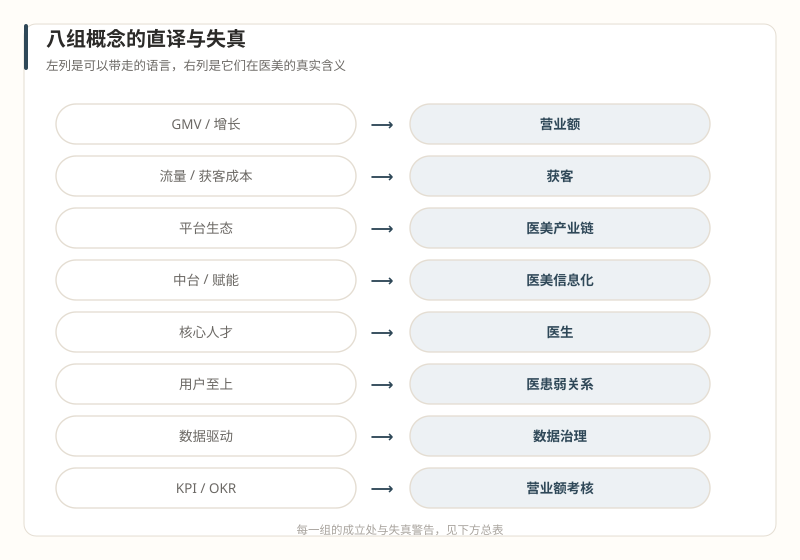

译工具页
翻译器总表
把大厂语言翻译成医美现实。成立处告诉你类比在哪里能用，失真警告告诉你它在哪里断掉。
怎么用
进场之前通读一遍，把旧语言的失真处记在心里；开会想说出某个大厂词之前，先回到这一页查一查它在这里的真实含义。这张表不能替你做决定，但能省下最贵的那一类学费——用旧地图走新大陆的学费。
八组概念的事实依据，均出自十六篇正文及其标注日期的引用来源；其中五组在正文里有展开的可视化实例，文末可直接跳转。

八组对照
| 大厂语言 | 医美现实 | 直译 · 成立处 | 失真警告 |
|---|---|---|---|
| GMV / 增长 | 营业额 | 同为规模指标，反映市场占有 | 行业长期只看营业额不看利润，两亿营收六百万利润已算赢家，增长可能越增越亏 |
| 流量 / 获客成本 | 获客 | 逻辑同构，机构获客需求真实而迫切 | 电商投产比已卷到一比一；行业要的是流量搬运，不是互联网方法论 |
| 平台生态 | 医美产业链 | 都是多边结构 | 利润分配倒挂：上游最赚、平台第二、机构最苦——你进的可能不是生态是被压榨层 |
| 中台 / 赋能 | 医美信息化 | 概念可对译，数据治理方向一致 | 行业从没出现过像样的中台，只有快速变现的 SaaS 和电商；连阿里都拆了自己的中台 |
| 核心人才 | 医生 | 同为稀缺资源、关键角色 | 医生不可管理；与股东医生冲突时，牺牲的是非医疗人员 |
| 用户至上 | 医患弱关系 | 口号相似，都强调客户 | 客户忠诚度与客流量的因果关系弱；医疗决策权在医生，不在运营 |
| 数据驱动 | 数据治理 | 电子病历、云存储是行业刚需 | 数据常被用来守住信息差而非消除它；每家机构都认为自己的医生适合所有人 |
| KPI / OKR | 营业额考核 | 都有指标体系 | 考核口径常是营业额而非利润，根源之一是老板不愿让职业经理人了解成本结构 |
五个展开实例
以下篇目的翻译器小节配有完整的三段式卡片（直译、失真、典型错误），是这张总表的逐题展开。